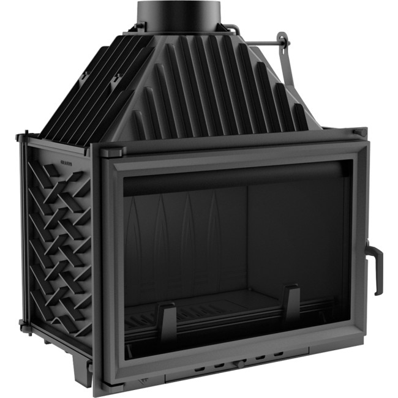

La cheminée à foyer ouvert
La cheminée à foyer ouvert est la cheminée la plus répandue dans le monde
Elle consiste en une installation permettant au feu d'être accessible de l'extérieur.
Généralement, celle-ci est conçue en brique ou en pierre et peut être intégrée dans un mur.
Cependant le rendement d'une cheminée à foyer ouvert est très limité, généralement situé entre 10% et 20% seulement !

une cheminée à foyer ouvert
La cheminée à foyer fermé
La cheminée à foyer fermé est, contrairement à une cheminée à foyer ouvert, une construction qui rend le feu inaccesible. Pour cela, elle est souvent équipée d'une porte en verre pour confiner le feu, ce qui assure ainsi bien une meilleure efficacité énergétique et sécurité accrue

une cheminée à foyer fermé
L'entre deux : a cheminée à insert
L'insert est un type de cheminée qui permet de profiter des avantages d'un foyer fermé tout en gardant l'esthétique d'un foyer ouvert.
Il consiste en un bloc fonctionnel, qui se place au sein d'un foyer ouvert. La combustion ne se fait qu'à l'intérieur du bloc,
ce qui concentre le feu et permet un rendement jusqu'à 70%, ce qui peut être comparable à une poêle à bois.
En France, elle est donc encouragée par l'Etat grâce à son éligibilité au crédit d'impôts développement durable.

une cheminée à insert